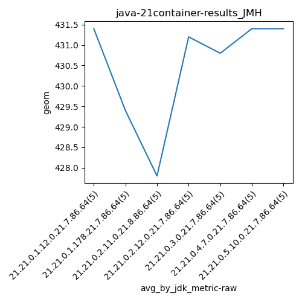
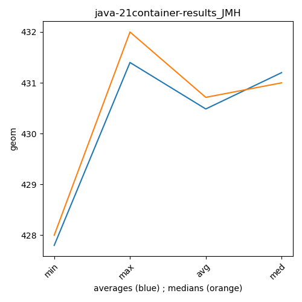

java-21 JMH
Context at bottom
/home/jvanek/git/benchmarks-in-nested-virtualisation-toolchain/final_results/container_results/container-results_J2DBENCH
java-21
JMH
/home/jvanek/git/benchmarks-in-nested-virtualisation-toolchain/final_results/container_results/container-results_RADARGUNs3
java-21
JMH
/home/jvanek/git/benchmarks-in-nested-virtualisation-toolchain/final_results/container_results/container-results_RADARGUNs1
java-21
JMH
/home/jvanek/git/benchmarks-in-nested-virtualisation-toolchain/final_results/container_results/container-results_DACAPO
java-21
JMH
/home/jvanek/git/benchmarks-in-nested-virtualisation-toolchain/final_results/container_results/container-results_SPECJBB
java-21
JMH
/home/jvanek/git/benchmarks-in-nested-virtualisation-toolchain/final_results/container_results/container-results_JMH
java-21
JMH
container-results_JMH
final score
Expected number of java-21 JDKs: 7
1st avgmed_alljdks_metric:
/home/jvanek/git/benchmarks-in-nested-virtualisation-toolchain/final_results/result_processing.py /home/jvanek/git/benchmarks-in-nested-virtualisation-toolchain/final_results/container_results/container-results_JMH geom False
values: [432, 432, 430, 433, 430, 428, 430, 431, 429, 429, 427, 427, 429, 428, 428, 430, 430, 432, 432, 432, 430, 432, 431, 431, 430, 432, 432, 432, 429, 432, 431, 431, 432, 432, 431]

Expected number of iterations: 5
final number of values: 35 out of 35
Pass rate: 100.0%
values: (427, 433, 430.48571428571427, 431)

** accuracy from all jdks and runs
more is better
MIN: 427
MAX: 433
AVG: 430.48571428571427
MED: 431
Relative differences 1:
MIN-MAX: 1.0 %
MIN-AVG: 1.0 %
MIN-MED: 1.0 %
MAX-MIN: -1.0 %
MAX-AVG: -1.0 %
MAX-MED: -0.0 %
AVG-MED: 0.0 %
stored to java-21.properties. sort | uniq that!
2nd avgmed_by_jdk_metric:
values: [431.4, 429.4, 427.8, 431.2, 430.8, 431.4, 431.4]

values: [432, 429, 428, 432, 431, 432, 431]

values: (427.8, 431.4, 430.4857142857143, 431.2)
values: (428, 432, 430.7142857142857, 431)

** accuracy from all jdks where runs were avged
more is better
MIN: 427.8
MAX: 431.4
AVG: 430.4857142857143
MED: 431.2
Relative differences 1:
MIN-MAX: 1.0 %
MIN-AVG: 1.0 %
MIN-MED: 1.0 %
MAX-MIN: -1.0 %
MAX-AVG: -0.0 %
MAX-MED: -0.0 %
AVG-MED: 0.0 %
stored to java-21.properties. sort | uniq that!
** accuracy from all jdks where runs were medianed
more is better
MIN: 428
MAX: 432
AVG: 430.7142857142857
MED: 431
Relative differences 1:
MIN-MAX: 1.0 %
MIN-AVG: 1.0 %
MIN-MED: 1.0 %
MAX-MIN: -1.0 %
MAX-AVG: -0.0 %
MAX-MED: -0.0 %
AVG-MED: 0.0 %
stored to java-21.properties. sort | uniq that!
pass rates:
container-results_JMH=100.0%
Context:
- container_results
- JMH